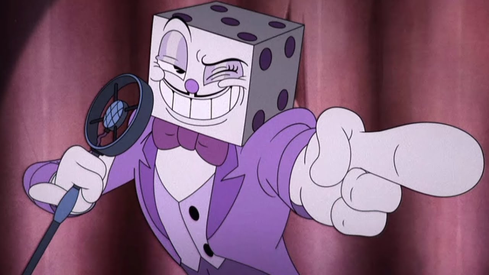

O último mundo de Cuphead é um dos desafios mais intensos e emocionantes que se pode encontrar neste jogo de plataforma clássico. Localizado no castelo do diabo, este mundo é composto por uma série de batalhas com chefes de nível de dificuldade crescente, que testam os limites das habilidades dos jogadores.
As batalhas finais do mundo de Cuphead são particularmente desafiadoras, com o jogador enfrentando o próprio diabo em uma batalha épica que exige reflexos rápidos, habilidades de esquiva precisas e uma estratégia cuidadosamente elaborada. O diabo é um inimigo formidável, com uma variedade de ataques poderosos e imprevisíveis, que vão testar a paciência e a habilidade do jogador até o limite.
Mas o último mundo de Cuphead não é apenas sobre desafios de combate. Também há momentos de beleza e surpresa, com cenários deslumbrantes e personagens incríveis, que ajudam a construir o mundo mágico e misterioso do jogo. Os jogadores vão encontrar uma grande variedade de inimigos neste mundo, cada um com suas próprias habilidades e personalidade únicas.
Em resumo, o último mundo de Cuphead é uma jornada incrível que desafia os jogadores a superar seus limites e a enfrentar o inimigo final. Com uma combinação de combate emocionante, cenários deslumbrantes e música inspiradora, este mundo é uma experiência de jogo que ficará na memória dos jogadores por muito tempo depois de terem concluído a sua jornada.
O Rei Dado é um personagem desafiador de enfrentar no jogo, com vários ataques poderosos e habilidades únicas. Ele usa uma variedade de cartas e dados para atacar Cuphead e Mugman, e os jogadores precisam ser rápidos e ágeis para evitá-los.
Além de suas habilidades de luta, o Rei Dado é conhecido por sua personalidade cruel e vingativa. Ele é implacável em sua busca pelas almas de outros devedores, e não tem piedade de quem se opõe a ele. Ele é um personagem muito bem construído e complexo, com motivações claras e uma presença ameaçadora.
Em resumo, o Rei Dado é um vilão memorável e desafiador em Cuphead. Sua aparência assustadora, habilidades de luta únicas e personalidade cruel o tornam um dos chefes mais desafiadores do jogo. Ele é um personagem que deixa uma forte impressão nos jogadores, e sua presença é fundamental para a narrativa e a jogabilidade de Cuphead.
